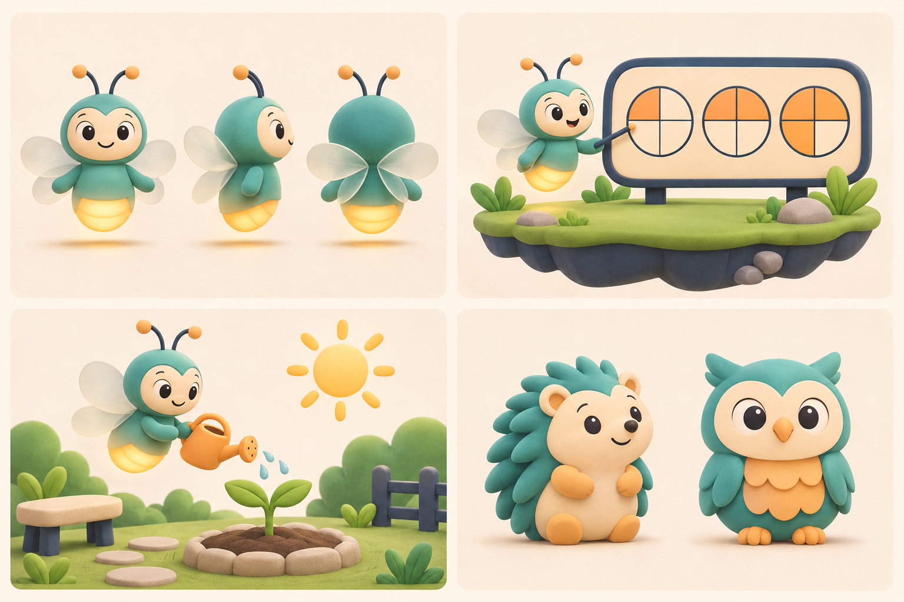
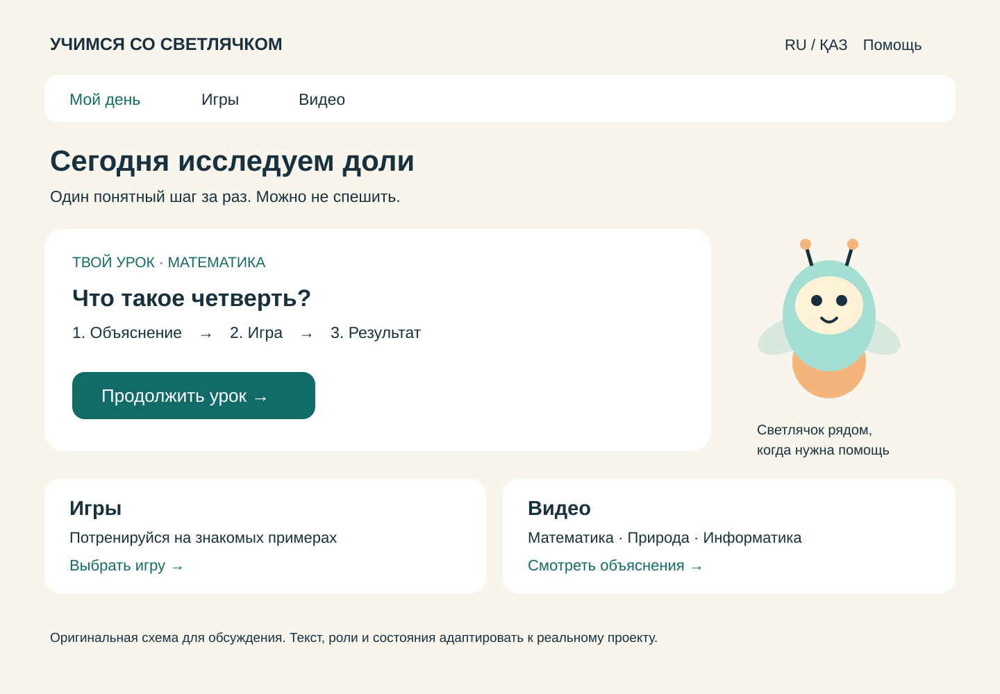

ГОТОВО К ПЕРЕДАЧЕ · 13 НОЯБРЯ 2026
Понятный путь ребёнка.
Игры, видео и светлячок.
Техническое задание для модернизации существующей платформы. Основной персонаж — светлячок, альтернативы — ёжик и сова.
Оригинальные концепты

Иллюстрации созданы для этого пакета. Это направление внешнего вида; готовые модели и видео ещё предстоит собрать.
Один следующий шаг на экране

Порядок работы
- Проверить существующий проект, доступ и сохранность прогресса.
- Исправить завершение урока и отчёт по каждому ученику.
- Реализовать понятный маршрут и первый полный урок с 3D и видео.
- Подготовить шесть двуязычных уроков и подтвердить программу с педагогом.
- Провести пилот с учителями и собрать наблюдения.
Для передачи отправьте всю папку или ZIP вместе с доступом к репозиторию. Ни ключи, ни данные детей в пакет не входят. Тексты .md можно открыть в редакторе.